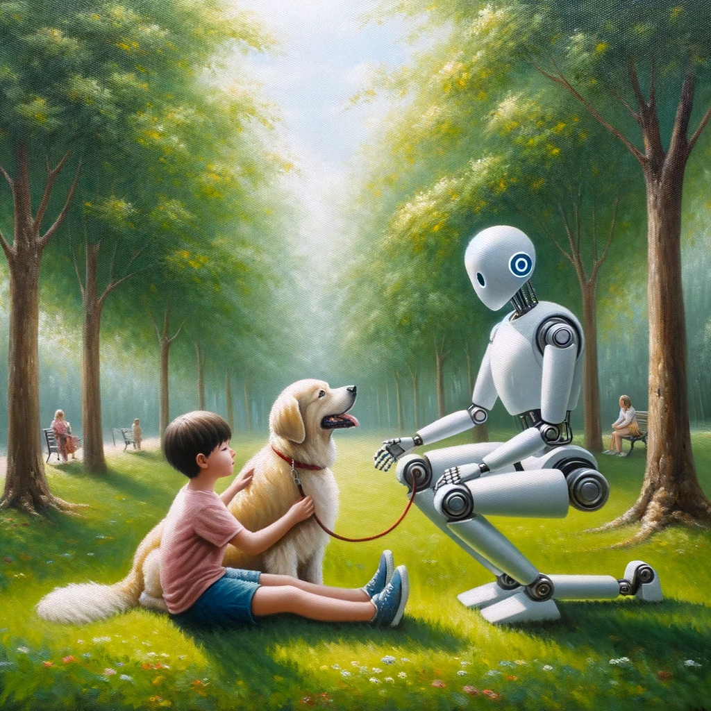

Marksahの特技Marksah's Special Skill

| 機能 |
赤ちゃん・ペット等、推測と雰囲気でしか想いをくみ取れなかった相手の言葉を理解できる Marksahがいれば、どんな相手とでも会話することができる。 赤ちゃんが今、何を求めているのか。 ペットの猫ちゃんは、どんなことを考えているのか。 知りたくない相手の気持ちも、知ってしまうことになるかもしれないが...笑 |
|---|---|
| 2023年時点での進歩 |
TEDの「Do animals have language? - Michele Bishop」によると
「コミュニケーションを取らない動物は存在しません。 動物が持つコミュニケーションツールと人間が持つ言語とは、決して非連続的なものではなく、なだらかにつながった連続的なものであるはず」 と語られている。 この主張が正しいとすれば、何がしかの処理を加えれば、会話できる可能性はあると考える。 参考：https://gigazine.net/news/20180108-animal-have-language/ |